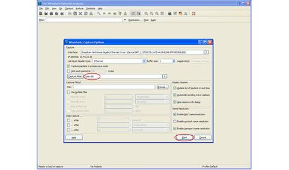
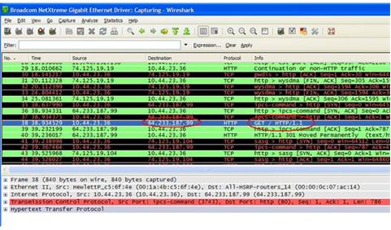

Most of us have studied Computer Networks in a very abstract manner. In other words, not many of us know how the abstract concepts of layers and packets translate in real life networks such as the Internet. Therefore let us do an experiment and see whether these layers, packets etc. exist in any real network also. So get, set and ready to delve into this wonderful world of practical and experimental Networking!
The outline of our experiment is as follows. We will capture some live packets, and to understand what is inside those packets, we will analyze those packets by dissecting them. Sounds surgical? Yup, it is. J
To start with, we need to have a PC running Windows XP and connected to the Internet. If you are reading this article online, the chances are high that you have everything ready to experiment. Now let’s recall some of the theory stuff that we read in Networking Books. The first thing that almost every book tells us – networking architecture is layered; remember that 7 layer OSI protocol stack! So where are these protocol layers? In our experiment, we will use 5 layer Internet Protocol stack so that we can solve the mystery of these layers.
We start our experiment by installing Wireshark (earlier known as Ethereal). Wireshark is a Network Protocol Analyzer that can capture and analyze the packets transmitted/received via a Network Interface Card (NIC). [You need to bear with me this acronym because Networking is full of acronymsJ] We install Wireshark from http://www.wireshark.org/download.html (at the time of this writing, the latest Wireshark version is 1.0.3). While installing Wireshark, leave the default settings/options as it is. Now our experimental setup is ready. Run Wireshark and click on the first icon (List the available capture interfaces …). Now we see a pop up window that shows Capture Interfaces. See the snapshots as follows.

The number and types of interfaces shown in Capture Interfaces window can be different for you depending on your PC’s configuration. For me it shows two interfaces and my Internet connection is through Broadcom Gigabit Interface. So choose the interface through which your Internet connection is available to you. Now let’s click on the Options button of this interface. Now we see a new window named Capture Options. In this window, type “port 80” in text field named Capture Filter. See the following snapshot for clarification.

Now we are ready to capture the packets passing through our NIC. By setting the filter to “port 80”, we have instructed Wireshark to capture only those packets that are because of http traffic (remember that we were always told that the default http port is 80!). Now click on the Start button on Capture Options window. You may see some packets in Wireshark if any program in your PC is accessing http traffic in the background; let’s not focus on that. Now open your browser and try to access http://google.com and now you should be seeing lot many packets getting captured in Wireshark. See the snapshot as follows.

Let’s start analyzing the captured packets. First of all, find the first instance of http packet that has GET / HTTP/1.1 in its Info field. In the above snapshot, it’s shown in blue. If we take a closer look, we see that this packet has the headers of the all the 5 layers of the Internet Protocol stack.
Layer 1 – It is the Physical layer. Here Frames are shown at the physical layer.
Layer 2 – It is the Data Link layer. In this packet, we can see that Ethernet II is used as data link layer protocol. We can find the MAC address of the source and destination in this header.
Layer 3 – It is the Network layer. In this packet, we see that IP is used as Network layer protocol. We can see the source and destination IP in this header.
Layer 4 – It is the Transport layer. In this packet, TCP is used as Transport layer protocol. We can find the source and destination ports in this header.
Layer 5 – It is the Application layer. In this packet, HTTP is used as Application layer protocol.
Let’s explore one of the layers. Other layers can be explored further in the similar fashion. If we expand the Layer 5 i.e. HTTP header, it looks as follows.

Here we see that Host is mentioned as google.com that is what we tried to access from browser. User Agent field of the HTTP header shows the browser details. In my case, it is Mozilla Firefox as evidenced from this header. Destination IP 64.233.187.99 should be one of the IP addresses assigned to Google server where the web server is hosted. It can be verified using a very handy utility command “nslookup”. The details of the other fields can be explored in the headers of the HTTP, TCP, IP, Ethernet II protocols. Some of the interesting fields are – Differentiated Services Field (also known as QoS field) in IP header, Window size in TCP header etc.
So we have seen that all those rhetorical concepts of layers etc. do exist in real networks also. And it sounds interesting when you dissect all the packets that pass through your interface card. By doing so, you can get to know what goes/comes through your PC!
The idea of this experiment is to provide a conducive platform so that you can explore your own the exciting world of Networking. So welcome aboard!